Query runtime on LUBM queries (log scale)
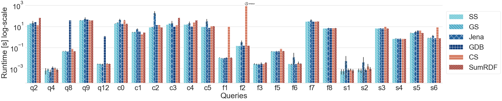Query runtime on YAGO-4 queries (log scale)
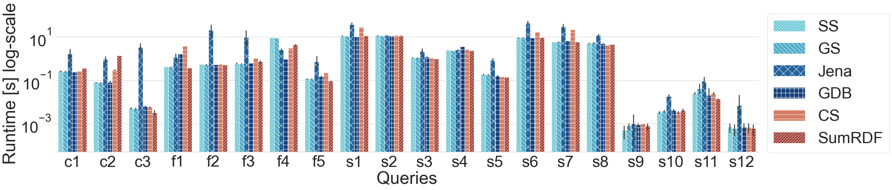Query runtime on WATDIV-SMALL queries (log scale)
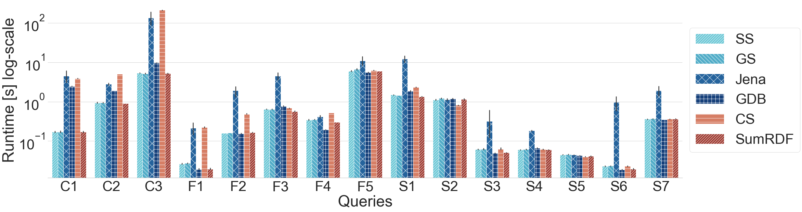Query runtime on WATDIV-LARGE queries (log scale)
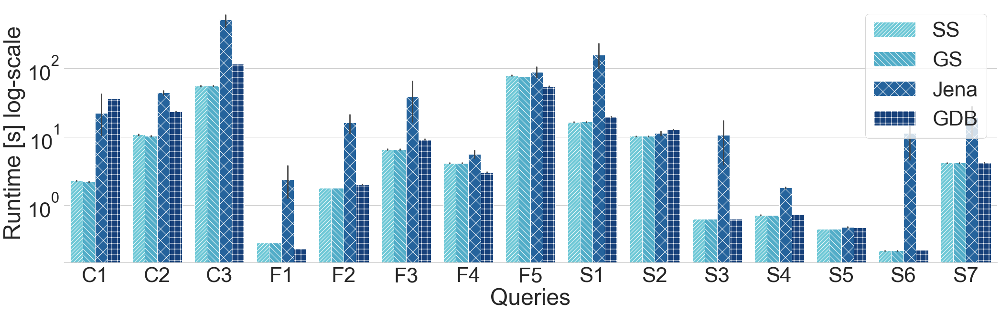Kashif Rabbani, Matteo Lissandrini, and Katja Hose.
Proceedings of the 24th International Conference on Extending Database Technology, EDBT 2021 (PDF), Publisher Link
With the growing popularity of storing data in native RDF, we witness more and more diverse use cases with complex SPARQL queries. As a consequence, query optimization - and in particular cardinality estimation and join ordering - becomes even more crucial. Classical methods exploit global statistics covering the entire RDF graph as a whole, which naturally fails to correctly capture correlations that are very common in RDF datasets, which then leads to erroneous cardinality estimations and suboptimal query execution plans. The alternative of trying to capture correlations in a fine-granular manner, on the other hand, results in very costly preprocessing steps to create these statistics. Hence, in this paper we propose shapes statistics, which extend the recent SHACL standard with statistic information to capture the correlation between classes and properties. Our extensive experiments on synthetic and real data show that shapes statistics can be generated and managed with only little overhead without disadvantages in query runtime while leading to noticeable improvements in cardinality estimation.
Rabbani, Kashif; Lissandrini, Matteo; and Hose, Katja. Optimizing SPARQL Queries using Shape Statistics. Proceedings of the 24th International Conference on Extending Database Technology, EDBT 2021
We provide an extended version of our paper accessible here.

We experimented on LUBM, YAGO-4
and WATDIV datasets.
All experiments are performed on a single machine with Ubuntu 18.04, having 16 cores, 1TB HDD and 256GB RAM.
We have the following metrics to evaluate our approach against others:
Query runtime on LUBM queries (log scale)
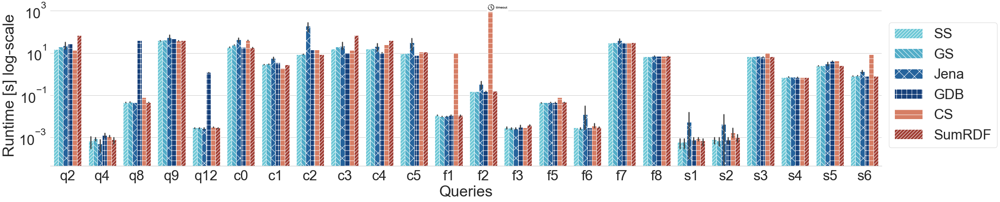Query runtime on YAGO-4 queries (log scale)
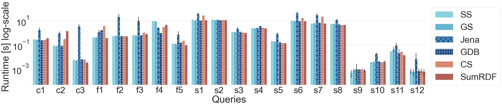Query runtime on WATDIV-SMALL queries (log scale)
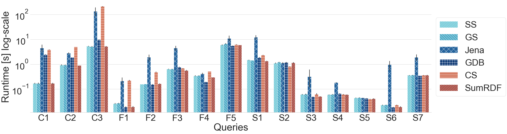Query runtime on WATDIV-LARGE queries (log scale)
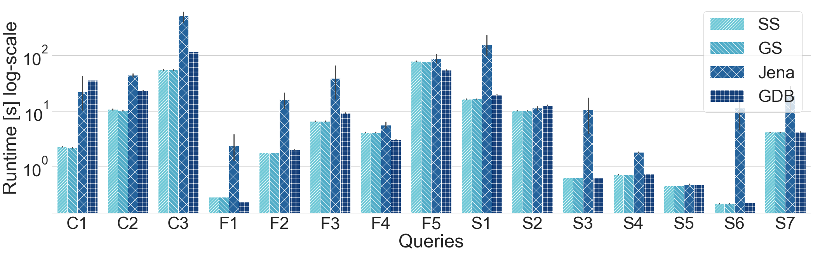Q-error for LUBM queries (log scale)
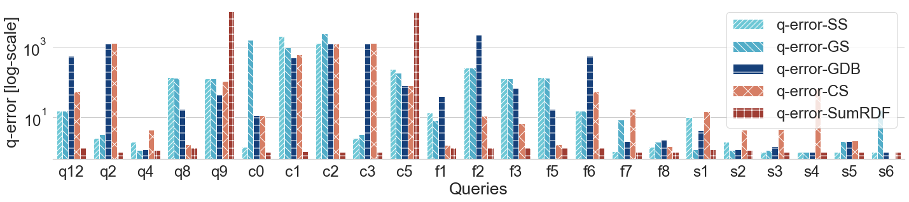Q-error for YAGO-4 queries (log scale)
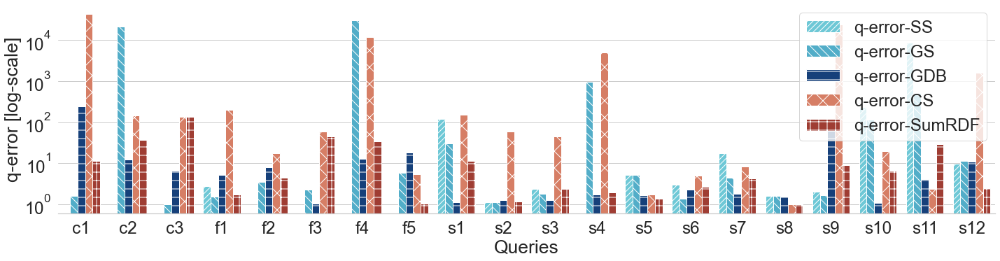Q-error for WATDIV-SMALL queries (log scale)
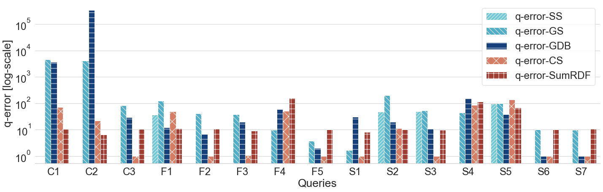Q-error for WATDIV-LARGE queries (log scale)
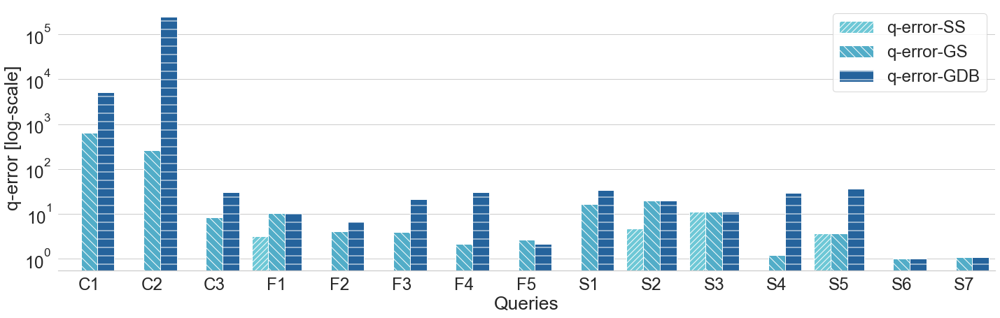Query plans' cost for LUBM queries (log scale)
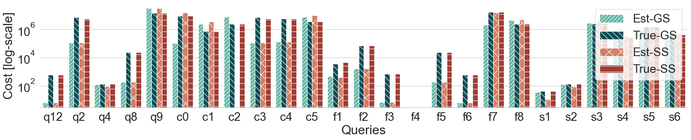Query plans' cost for YAGO-4 queries (log scale)
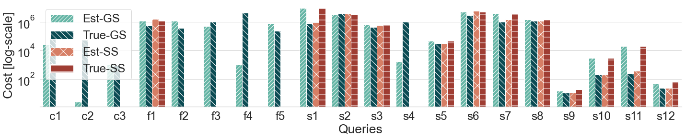Query plans' cost for WATDIV-SMALL queries (log scale)
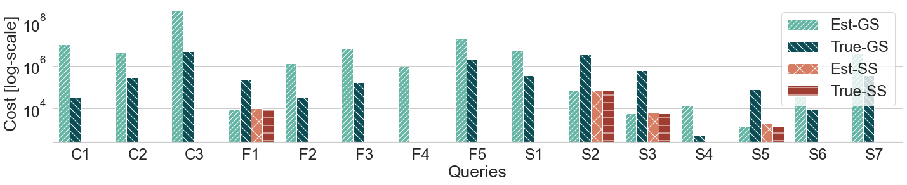Query plans' cost for WATDIV-LARGE queries (log scale)
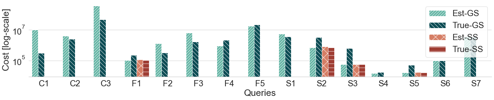We implemented our join ordering algorithm in Java using Jena v.3.15.0. We provide source code, queries, links to download all datasets, and setup details on GitHub
Java 8 or newer.